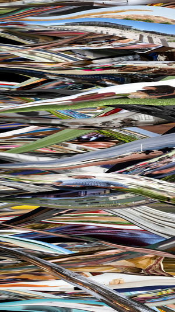

Código, sistemas y arte generativo contemporáneo

“Una obra puede ser definida como un sistema y ejecutada en múltiples formas.”
Casey Reas
Arte generativo y pensamiento computacional
Casey Reas es un artista, programador y educador reconocido por su trabajo en el desarrollo del arte generativo. Su práctica se basa en la creación de sistemas que, a partir de reglas definidas, producen imágenes y comportamientos visuales autónomos. Este enfoque desplaza la idea tradicional de obra terminada hacia procesos abiertos y en constante evolución. Su trabajo se centra en la relación entre instrucciones, ejecución y resultado. A través del uso del código, construye estructuras que permiten explorar variaciones infinitas dentro de un mismo sistema. De este modo, cada ejecución puede dar lugar a una experiencia visual distinta. Además de su producción artística, ha tenido un rol clave en la difusión del pensamiento computacional dentro del arte contemporáneo. Su enfoque promueve la comprensión del código como un medio expresivo, accesible y profundamente creativo.
Obra de arte digital generativo titulada Path

Creada por el artista estadounidense Casey Reas en el año 2001
El código como sistema visual
El enfoque de Casey Reas se basa en la creación de instrucciones que definen comportamientos visuales. En lugar de diseñar una imagen de forma directa, desarrolla algoritmos que determinan cómo los elementos se relacionan, se mueven y evolucionan en el tiempo. Este método convierte al código en el núcleo del proceso creativo.
A partir de reglas simples, sus sistemas pueden generar resultados complejos e impredecibles. Esta lógica permite explorar la emergencia, donde patrones y formas surgen de la interacción entre componentes. El resultado es una obra que no está completamente controlada, sino que se desarrolla dentro de un marco definido.
Obras y conceptos clave
- Software Structures
- Process
- Generative Systems
- Emergencia
- Arte basado en reglas
- Visualización algorítmica
Stills from TOday’s Ideology

(19 July 2015), 2015.